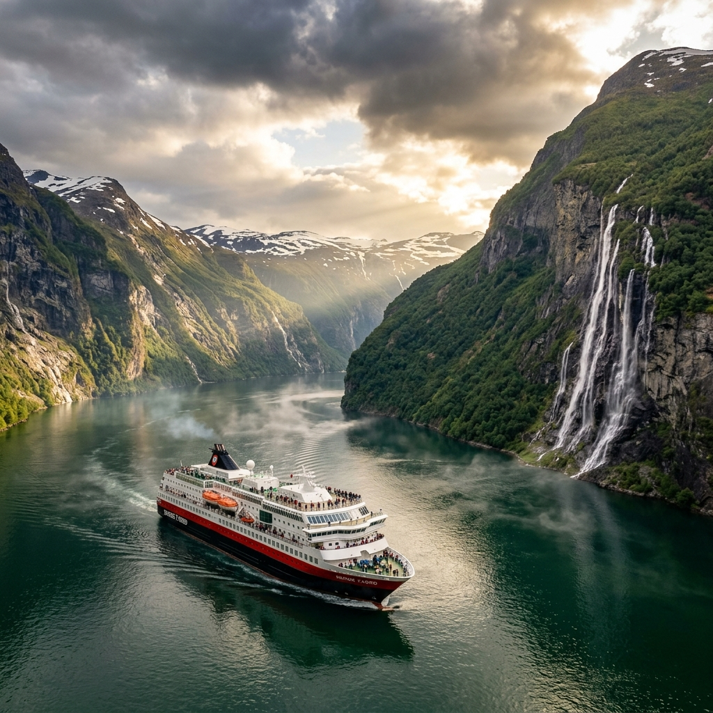
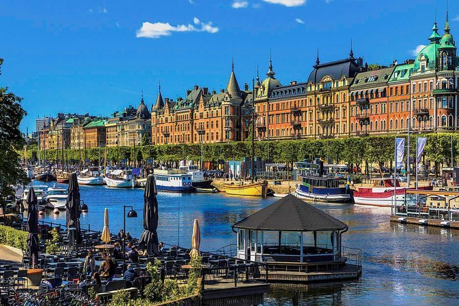
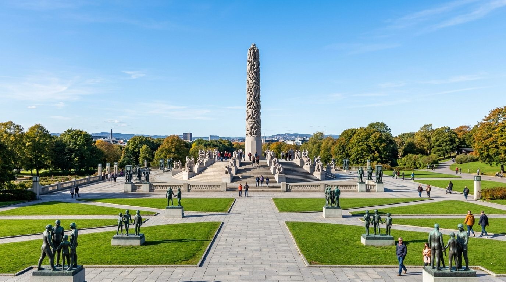
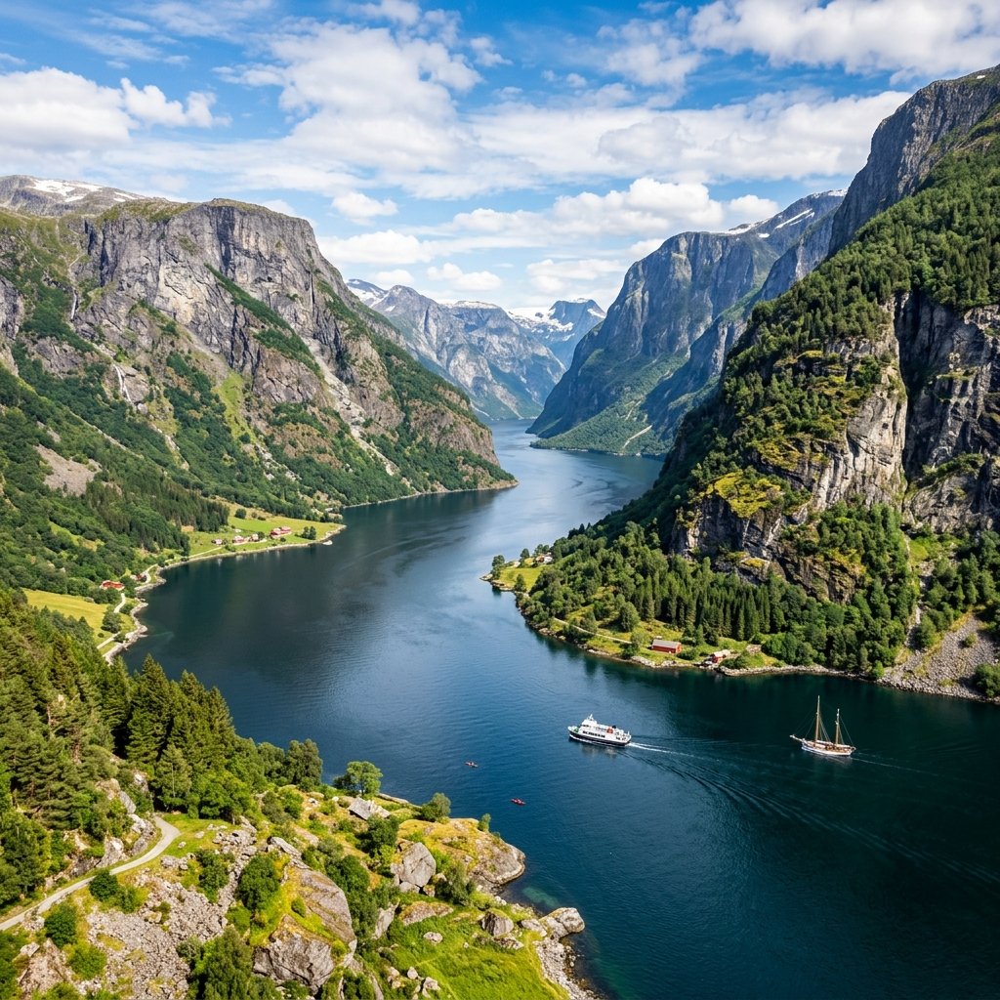
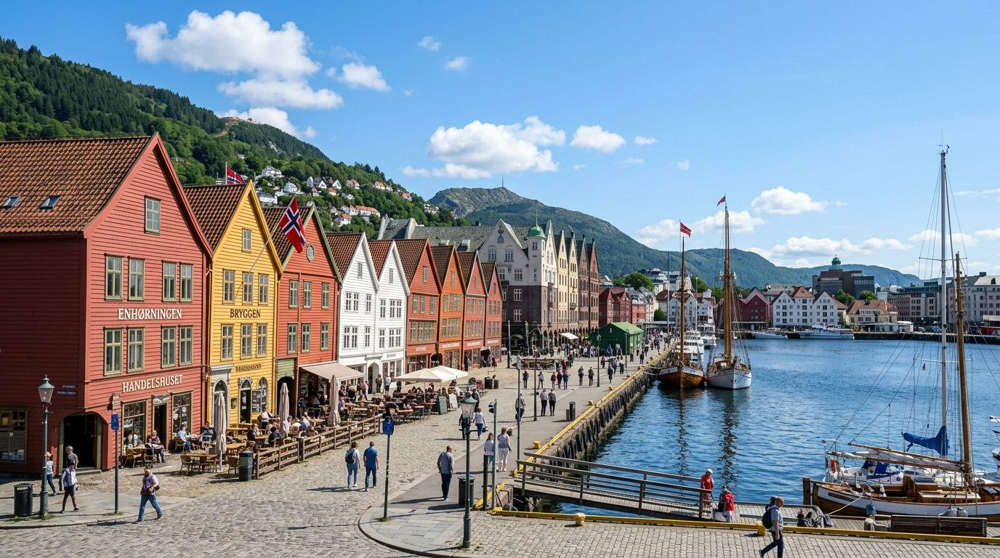
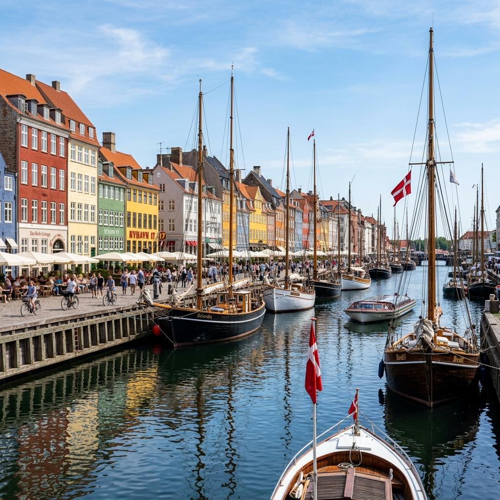
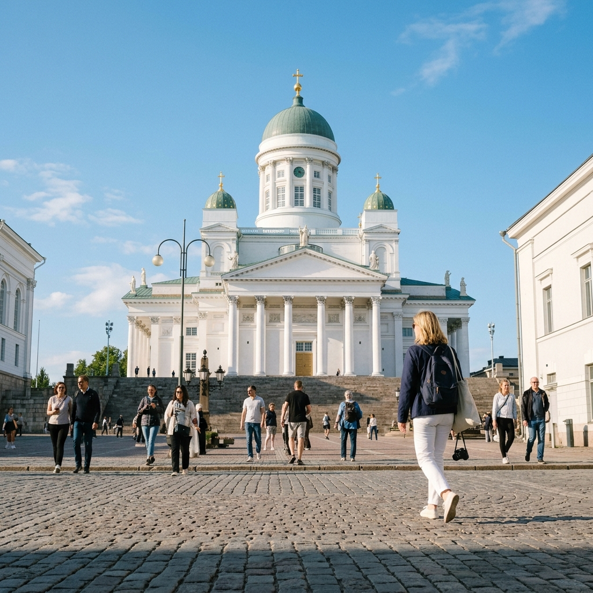

PANDORA TRAVEL • PREMIUM NORDIC SUMMER ESCAPES | COPENHAGEN
NORDIC ESCAPE.
DISCOVER SCANDINAVIA
Nordic market partners — crafting premium scenic rail loops, luxury overnight cruise journeys, and majestic fjord explorations across Sweden, Norway, Denmark, and Finland.
SCROLL TO TRAVEL





